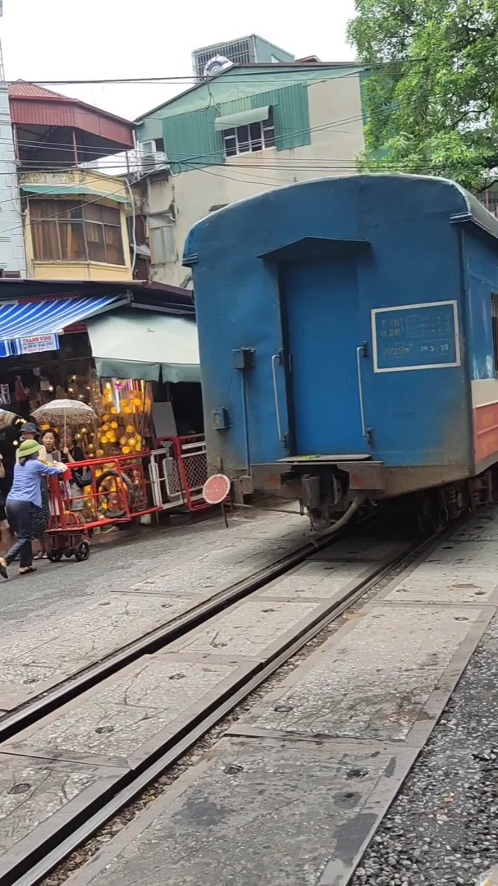
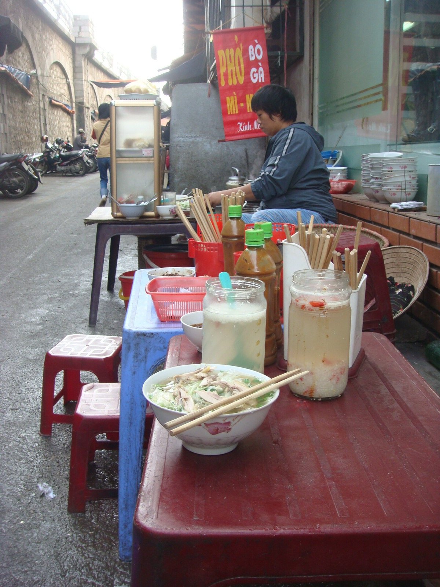
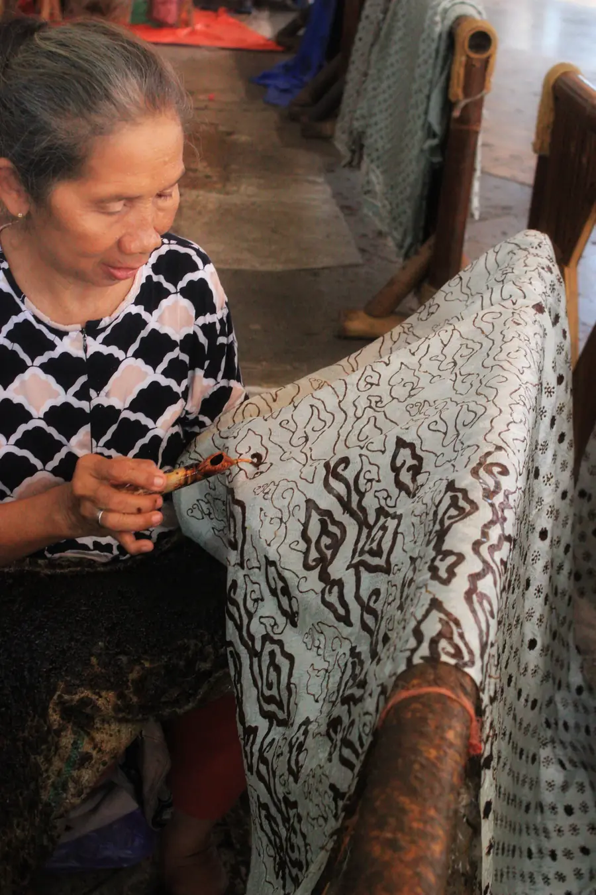
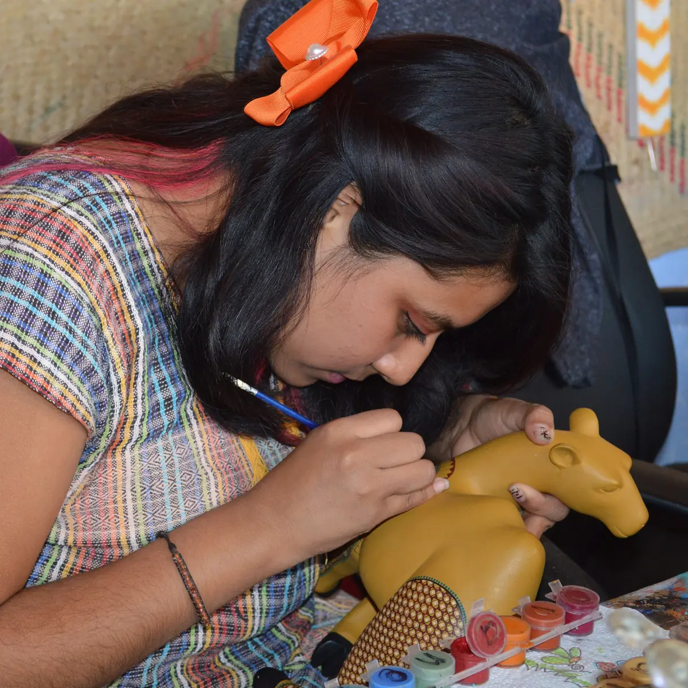
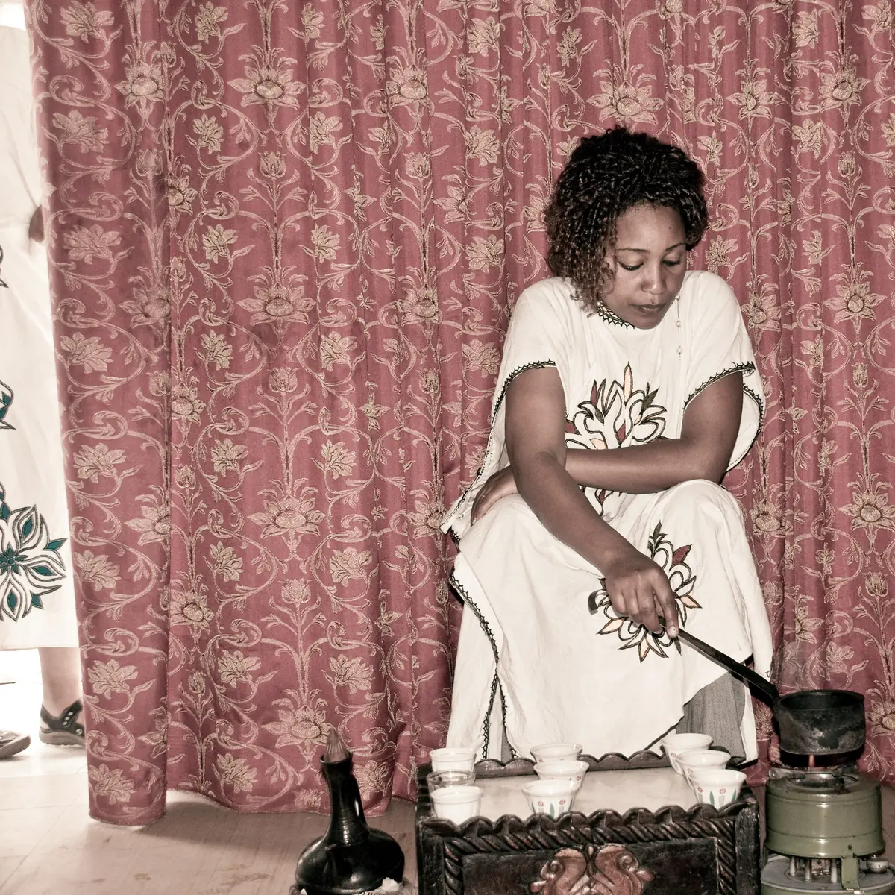

Read Hà Nội
before you land.
Short, sourced stories for a first trip to Vietnam: what happens at the table, on the street and at the temple, and the words people use there.
5 themes · 11 stories · 4 practice scenes · 11 phrases

Three places you will find yourself
Choose one to see what to expect there, and one thing worth saying.

Tôi no rồi, cảm ơn.
I’m full, thank you.
When the host keeps adding food to your bowl.
▶ Listen · computer voice
More destinations, once they are sourced
We add a country only when its stories have been researched and checked. Vietnam is the first.


